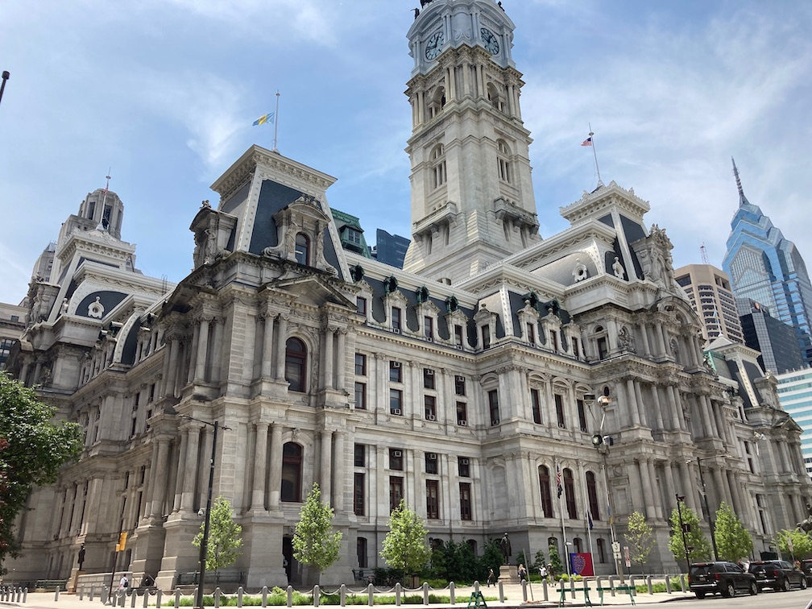

Philadelphia trip report from 21-23 May 2021.
After narrowly making it out of work with enough time to make it to the airport, the plane was met with a flat tire post-boarding, causing a collective groan amongst the cabin plus a two-hour delay. The plane touched down in Philly around 9:30pm.
I was picked up by my friends (one who lives in a suburb outside of Philadelphia—call him T—and two who live in my hometown—call them E and C) and whisked back to his turf for what is easily the best convenience store hoagie I've ever had: the Wawa Italian. Perhaps it was how hungry I was, but I didn't think convenience store food could taste that good. As evident by the diverse group waiting for their sandwiches, it's the place to go around there; a northern Whataburger of-sorts, I'd dare to say.
We went back to T's place, played some games, then hit the sack in preparation for our day of sightseeing in the morrow.
Breakfast consisted of an omelette and bagel at Ardmore Station Cafe, a small diner in the quiet town of Ardmore. We ate quickly and began the 30-minute drive to the heart of Philly.
Parking was plentiful in an underground garage that was a 60-second walk to Independence Hall. As we walked towards it, we were greeted by the statue of Commodore John Barry, the father of the American Navy. Sadly, the Independence Hall tours were completely booked by the time we got there, so we settled for walking around it. The Liberty Bell, stored across the street, had a 90-minute line which was quickly opted out of for the cheater's view: through the window. A bronze plaque next to the window gave a brief history and explanation of the Bell for those unfamiliar. Audio in almost a dozen languages was also available.
We continued deeper into the heart of the city, ending up at Reading Terminal Market, home of "one hundred merchants offer fresh produce, meats, fish, artisan cheese, groceries, ice cream, flowers, grilled cheese, baked goods, crafts, books, clothing, and specialty and ethnic foods." From the outside, it looked like a series of shops in a row. Inside was a different story. Immediately after entering a plethora of smells hits you, all delicious and inviting. There's enough variety to grocery shop or get a meal—shopper's choice. We opted for a beer each, as lunch was already decided, and continued on our way towards City Hall.
Philadelphia City Hall is beautiful. It's the largest free-standing masonry (consisting of brick, marble, and limestone) in the world. The exterior's level of detail is exacting. The only eyesore about it is the air conditioning units hanging out of each and every window! Now I know central heating and A/C wasn't a thing back then and Philadelphia can get pretty hot, but c'mon... show some love for the architecture!
Directly across from City Hall is The Masonic Library and Museum of Pennsylvania:
The Masonic Temple in Philadelphia was constructed in 1873. It is considered one of the great “wonders” of the Masonic world. Resplendent with artwork, frescos, stained glass, murals and sculpture, it is a visual treasure just waiting to be discovered by the public. It connects both Masons and non-Masons alike to an inspirational world of art and architecture, history and grandeur. In addition, there is also an exhibit hall, featuring a wide assortment of treasures from Philadelphia’s, America’s and Freemasonry’s past.
Sadly, we didn't go in, only admired its equally-as-beautiful architecture from the shadow of City Hall.
Lunchtime had come. And lunchtime for a Philly tourist means one thing, and one thing only: cheesesteaks. The mile-and-a-half trek back across downtown to Jim's South St. was finished quickly, our stomaches subconsciouly willing our legs to move faster to the promiseland of cheese and steaks and onions and bread. The 30-person line moved fast all thanks to the masters running the cheesesteak assembly line. I don't think I've ever seen a more efficient food assembly line. Guy 1 was in charge of cooking meat and getting Guy 2 cheese (if needed, more on that in a second). Guy 2 took meat, lined it up, put the bread on top, then did some manuever to flip the bread right-side-up with minimal steak spillage, followed by cheese. Onions and peppers are optional, but mandatory for the full experience. Girl 3 added hot peppers if desired and wrapped the godly sandwich. Guy 4 ran the cashier. The only way they could've been faster is setting their prices at an even dollar amount, like $10 (they're cash-only). Just hand them a $10 or $20, no need to deal with change.
The cheese debate rages on and will continue for all eternity. Some elitists swear by Cheez Whiz, a liquid cheese that is poured onto the steak after placing it on the bread. The only other options are American and provolone. There are no options besides those three that allow for the sandwich to be called a Philly cheesesteak. I got Whiz.

After the fact I learned of the Philly Taco: a Jim's cheesesteak wrapped in a slice of pizza from Lorenzo's, a nearby pizzeria. Looks like I have an excuse to return to Philadelphia!
Our work in downtown Philly was finished with a visit to the Tomb of the Unknown Revolutionary War Soldier located in Washington Square and atop mass graves of Revolutionary War soldiers. An equally humbling experience as the one in Arlington National Cemetary.
With reservations to Morgan's Pier at 5:00pm, we headed to the waterfront and puttered around the piers under Benjamin Franklin Bridge, getting to distantly watch a small wedding and people going to and fro. Morgan's Pier consisted of drinks (vodka and soda all the way, baby) and conversation, leaving around 6:30pm to head back to the apartment for much-needed showers (did I mention it was 92 °F throughout the afternoon?) and a bit of rest.
Dinner was two courses: sour beer at a nearby pub, followed by a delicious roast beef sandwich at Pub of Penn Valley and a nice walk back to the apartment. The night finally finished with some drinking games and watching It's Always Sunny in Philadelphia.
We were up and out of the house by 10:30am, stopping at Turning Point of Bryn Mawr for a breakfast of oatmeal and french toast. We then braved late-morning traffic (how??) on our way to the Philadelphia Museum of Art.
While we could see it coming from miles away, it was even more impressive up close. All of the art museums I've been to are fairly lackluster in presence and display. PMA is a major exception. Its columns tower over the visitor, commanding respect for building and its artifacts and artwork. The interior is equally as beautiful, but without any unnecessary complexity. There are single entrances in and out of exhibit areas (although this may be a security feature), although each area had many rooms, some of which were likely missed by us.
My favorite types of art are Renaissance and landscape, both of were well-represented at PMA. I'm not as much a fan of artifacts and despise modern art, so those areas were quickly moved through or skipped altogether.
Walking around to the north side put us at the Rocky Steps and statue, giving a nice vantage point of the city and area surrounding the Museum. We took a few pictures, hung out in the shade for a bit, then hit the car.

A short drive later and we were at T's university for a short tour of the rather-small (when compared to my alma mater, Texas A&M) campus. Once again, the beauty of the architecture was foreign to me. Texas A&M's architecture is brutalist (example here) and fairly colorless, besides that beautiful shade of tan! (Seriously, most buildings on campus look like that.) Green spaces are far and in between. The university we toured was well-designed both building- and green space-wise. Most buildings were nice, there was actually elevation change, and plenty of trees, grass, and shrubbery.

I ended Sunday meeting another Philly-based friend at Dalessandro's, another famous cheesesteak place in the suburbs. I got American at his recommendation. We ate with his girlfriend outside their apartment pool, enjoying the afternoon sunshine, wind on our faces, and delicious sandwiches. He took me to the airport, where I boarded my flight around 8:30pm and touched back down in Texas around 11:30pm, just in time to get some sleep for work the next day at 7:00am.
A fun, worthwhile trip!
COVID was still very much a consideration when compared to Texas—who would've thunk it. I rarely saw people with masks not covering their noses, many people were wearing masks while walking in the street, and most businesses were pretty strictly enforcing their mask policy. A woman even apologized to me for not wearing her mask when I opened a door for her, despite me wearing my mask. Wow!
{kind=link}